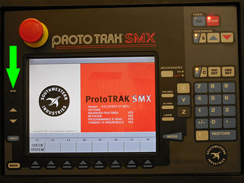
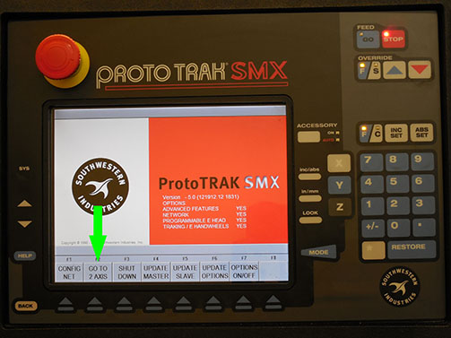
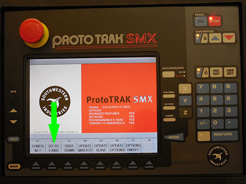
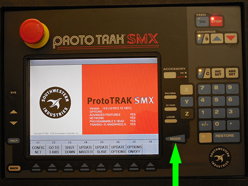
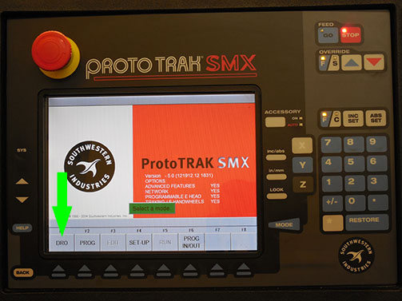
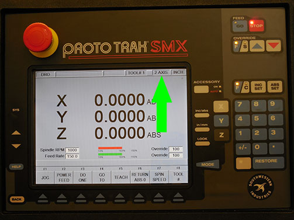

To switch between 2 & 3 axis modes, hit the “SYS” located on the far left side of the pendant. It doens’t look like a button, just the letters SYS.
This will bring up the screen where you will be able to choose between 2 and 3 axis modes of operation on the DPM2.
 To escape this screen, press “MODE” and “DRO”.
 If you look at the top of the screen while in “DRO”, you will be able to see if you are in 2 axis or 3 axis mode of operation.
